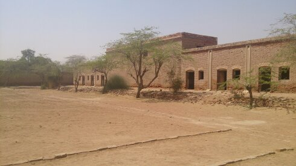
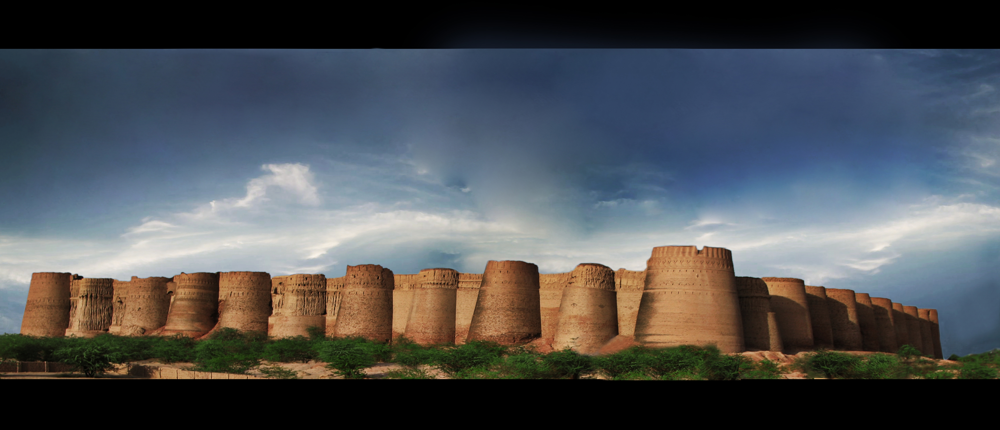
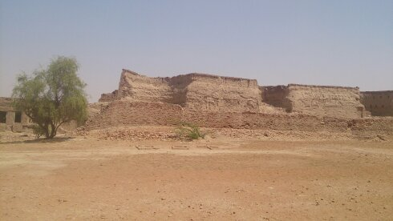
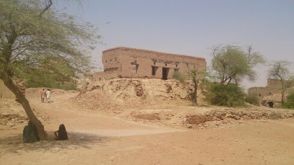
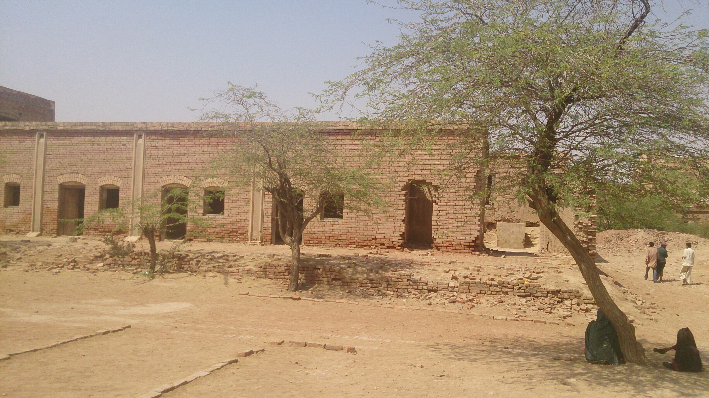
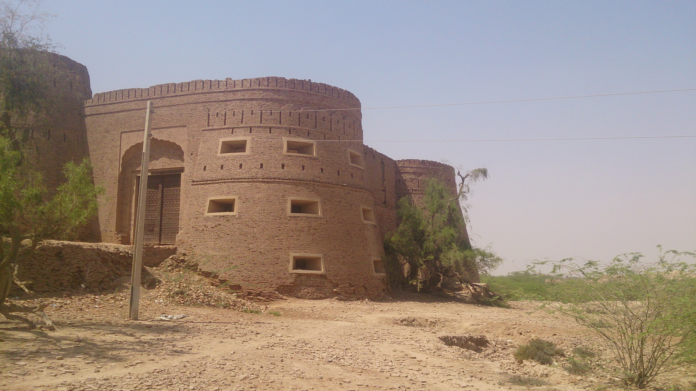
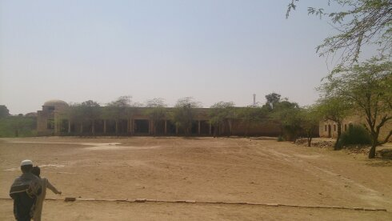

📍 Location: Ahmadpur
East Tehsil, Bahawalpur District, Punjab, Pakistan
📅 Period: 9th
century A.D. (original construction attributed to Rai Jajja Bhatti);
substantially rebuilt and enlarged 18th–19th century by the Abbasi Nawabs of
Bahawalpur
🏷️ Category: Military
/ Architectural / Historical
⚠️ Status: Provincial
Heritage Site; on Pakistan's Tentative List for UNESCO World Heritage
(submitted 2004)
🔢 Classification: Protected
Antiquity under the Punjab Special Premises (Preservation) Ordinance 1985
📏 Significance: Military,
Dynastic, Architectural, Cultural
🗺️ Coordinates: 28°45′N
71°21′E

There is a particular quality of astonishment that attends
the first sighting of Derawar Fort. It is not the astonishment produced by
ornamental beauty, nor by archaeological antiquity, nor by any of those gentler
forms of wonder that heritage sites commonly provoke. It is, rather, the
astonishment of sheer improbability.

The Cholistan Desert — that vast, arid, sparsely populated
tract that stretches south and east of Bahawalpur toward the Indian border — is
a landscape of almost lunar emptiness. Sand. Low scrub. The occasional cluster
of mud-walled huts belonging to nomadic herdsmen. The horizon is unbroken in
every direction. The sky presses down upon the earth with a weight that seems
almost physical. Nothing in this terrain prepares the traveller for what
appears, gradually, upon approach: forty massive bastions, rising to a height
of thirty metres, arranged in a rough square, enclosing an area that could
swallow a small town.

Derawar Fort stands in the desert as though placed there by
some agency indifferent to reason. There is no river beside it. No crossroads
of trade beneath its walls. No fertile valley whose produce it might command.
It stands alone, enormous, and — to the uninformed eye — inexplicable.

But it is not inexplicable. It is the product of specific
historical circumstances, of dynastic ambition, of strategic calculation, and
of the particular logic that governs the construction of fortresses in arid
lands where water is the supreme commodity and the control of wells and
seasonal watercourses determines the fate of empires.

The earliest construction at the site of Derawar is
attributed, by local tradition and by the historical chronicles of the
Bahawalpur state, to a Rajput chieftain named Rai Jajja Bhatti, who is said to
have built a fortification here in the ninth century A.D. The Bhatti Rajputs
were a powerful clan whose domains extended across portions of what are now the
Cholistan and Thar deserts, and whose political and military influence shaped
the history of the region for several centuries.

Of Rai Jajja's original fort, little or nothing survives in
the present structure. The fortification that stands today is overwhelmingly
the work of later builders — principally the Abbasi Nawabs of Bahawalpur, who
acquired control of the fort in the eighteenth century and transformed it into
the formidable citadel that the visitor now sees. Nevertheless, the attribution
to Rai Jajja preserves an important historical memory: that the site has been
recognized as a place of strategic value for more than a thousand years, and
that the impulse to fortify it preceded the arrival of Islam in the region by a
considerable margin.
The name "Derawar" is itself of uncertain
etymology. Some scholars connect it to the Bhatti clan name
"Deorawat." Others propose derivations from local terms for a
fortified enclosure. The question is unresolved, and perhaps unresolvable,
given the absence of contemporary inscriptions or documentation from the
earliest period of the fort's existence.
The Abbasi Nawabs and the Transformation of Derawar
The fort's present form is principally the achievement of
the Abbasi dynasty — a family of Arab descent that established the princely
state of Bahawalpur in 1727 and ruled it, with varying degrees of autonomy,
until the state's merger with Pakistan in 1955.
The Abbasis were not the first Muslim rulers to hold the
fort. Control of Derawar had passed through several hands in the centuries
following the initial Muslim conquests of Sindh and southern Punjab. But it was
the Abbasis who recognized the fort's potential as a seat of power in the
desert, who invested the resources necessary for its comprehensive
reconstruction, and who made it the symbolic centre of their authority over the
nomadic and semi-nomadic populations of Cholistan.
The reconstruction undertaken by the Abbasi Nawabs —
particularly during the late eighteenth and early nineteenth centuries — was
thorough. The forty bastions that now define the fort's perimeter were raised
to their present height of approximately thirty metres, constructed of fired
brick and faced, in part, with sandstone. The walls between the bastions are of
immense thickness — sufficient to withstand cannon fire and to support a
defended parapet along their entire circuit. The total perimeter of the fort
measures approximately 1,500 metres.
Within the walls, the Nawabs constructed a complex of
palatial apartments, audience halls, administrative buildings, a mosque,
storerooms, and — critically — wells and water storage facilities. The
provision of water within the fort's walls was essential. In a desert
environment, a fortress without water is not a fortress at all. It is a trap.
The mosque within the fort is a structure of some architectural distinction, featuring decorative tile work and a prayer hall of generous proportions. Adjacent to the fort, but outside its walls, stands the Abbasi family necropolis — a cluster of tombs and mausolea, some of them decorated with blue and white glazed tile work that recalls the funerary architecture of Sindh and Multan.
Strategic Logic — Why Here?
The question that occurs to every visitor — why build a
fortress of this magnitude in the middle of a desert? — deserves a considered
answer.
Cholistan was not always the uninhabited waste it appears
today. Archaeological evidence, including the work of M. Rafique Mughal and
others, has demonstrated that the desert was once traversed by a major river
system — generally identified with the ancient Ghaggar-Hakra, which some
scholars associate with the Sarasvati of Vedic literature. Along the banks of
this now-vanished river, settlements flourished from the Indus Valley
Civilization period onward. When the river shifted course and eventually dried
up — a process that occurred gradually over many centuries — the population
thinned, but the region did not empty entirely. Nomadic pastoralists continued
to move through the desert, following seasonal patterns of rainfall and
grazing. Their herds represented wealth. Their movements required management.
And the wells and seasonal pools upon which they depended were points of
strategic control.
Derawar Fort was positioned to command this landscape. Its
garrison could project power across the surrounding desert, regulate the
movement of nomadic groups, secure the water sources, and defend the southern
approaches to the fertile lands of the Bahawalpur state. The fort was, in
short, not an anomaly but an instrument — a tool of governance adapted to the
specific conditions of an arid environment.
That the fort also served a symbolic function — asserting
the grandeur and permanence of the Abbasi dynasty against the vast indifference
of the desert — is equally true. Power, in this landscape, required visibility.
Derawar is nothing if not visible.
The present condition of Derawar Fort is a matter that does
not admit of easy summary. Viewed from a distance, the fort appears magnificent
— its bastions intact, its profile unbroken against the sky. Approached more
closely, the reality is more complicated. Sections of the outer wall have
suffered significant deterioration. Brickwork has eroded. Portions of the
parapet have collapsed. The interior structures — palaces, storerooms, the
residential quarters — are in various stages of decay, some of them reduced to
foundations, others still partially standing but visibly unstable.

The causes of this deterioration are multiple. The desert
environment, though it preserves some materials well, subjects exposed
brickwork to extreme thermal cycling — intense heat by day, sharp cooling by
night — which gradually fragments the fabric. Wind-borne sand abrades surfaces.
The rare but violent rainstorms that strike Cholistan can cause sudden and
destructive erosion. And the absence, for decades, of any sustained programme
of structural maintenance has allowed incremental damage to accumulate unchecked.
The fort's inclusion on Pakistan's Tentative List for UNESCO
World Heritage inscription in 2004 represented an official acknowledgement of
its significance. Yet the nomination has not advanced to formal inscription,
and the conservation measures implemented since that time have been, at best,
intermittent. The Cholistan Development Authority and provincial heritage
bodies have undertaken limited interventions, but the scale of the structure
and the remoteness of its location present formidable logistical challenges.
There exists, among those who care about such things, a
quiet urgency regarding Derawar. The fort is deteriorating. Not rapidly — its
massive construction affords it a certain resilience — but steadily. Each year,
a few more bricks fall. Each storm opens new fractures. The desert, which the
fort was built to dominate, is slowly reclaiming it.
The Desert and Its People
No account of Derawar Fort is complete without some mention
of the human context in which it sits. The Cholistan Desert is home to a
population of nomadic and semi-nomadic pastoralists — Mahra, Jat, Channar, and
other groups — whose way of life is among the oldest continuously practised in
the subcontinent. These communities move with their herds of camels, cattle,
goats, and sheep, following ancient routes that connect seasonal grazing
grounds and water sources.
Their relationship to the fort is complex. It is a landmark
in their landscape — a fixed point of reference in a world defined by movement.
It has served, at various times, as a place of refuge, a seat of authority to
which they owed allegiance or from which they suffered exaction, and a symbol
of a settled power that was, in many respects, alien to their own mode of
existence.
The annual Cholistan Desert Rally, a motor-sporting event held in the vicinity of the fort, has brought Derawar to wider public attention in recent years. Whether this attention will translate into sustained conservation effort remains to be seen.
What the Bastions Hold
Derawar Fort is not a ruin in the ordinary sense. It has not
been reduced to foundations and scattered fragments. It stands, substantially,
as it stood two centuries ago — a fortress of forty bastions, thirty metres
high, enclosing a space that once contained a court, a garrison, a dynasty's
ambition, and the administrative apparatus of a desert state. It is among the
largest and most visually striking fortifications in the subcontinent. And it
stands in one of the most remote and least visited corners of Pakistan.
This combination of grandeur and obscurity is itself
instructive. It reminds us that significance is not a function of
accessibility. That monuments do not require audiences to possess meaning. That
the measure of a civilization's regard for its own past is taken not at the
sites that attract millions of visitors, but at the sites that attract almost
none — the places where preservation is difficult, where funding is scarce,
where the only witnesses are the sand and the sky.
Derawar Fort deserves to endure. Whether it will endure
depends upon decisions that have not yet been made, resources that have not yet
been allocated, and a commitment to heritage preservation that, in Pakistan as
in many countries, remains more rhetorical than operational.
The bastions stand. For now.
Rising from the vast flatness of
the Cholistan Desert like something conjured from a dream, Darawar Fort is
among the most visually stunning structures in all of South Asia. Its forty
massive circular bastions, their surfaces still largely intact, form a
silhouette against the desert sky that stops you completely when you first see
it. This is a place that announces itself without any need for introduction.
Darawar has been a seat of
power, a military garrison, a royal retreat, and a symbol of prestige for the
Abbasi family — descendants of the Nawabs of Bahawalpur — who still consider it
their ancestral home. The mosque adjacent to the fort, a miniature echo of
Lahore's Badshahi Mosque, speaks to the ambitions and tastes of rulers who
wanted their desert outpost to rival the grandest courts of the subcontinent.
For travellers willing to make
the journey into the Cholistan — ideally in the cooler months — Darawar Fort
offers an experience that is genuinely unlike anything else in Pakistan. The
desert silence around it, the scale of its walls, and the ancient Hindu Bikaner
graveyard nearby together create a landscape layered with history, faith, and
an almost mythological quality that stays with you long after you have returned
to the city.
Q1: Who built Darawar Fort?
The original fort was built by a Hindu ruler named Rawal
Deoraj in the 9th century CE. It was later captured and significantly expanded
by the Nawabs of Bahawalpur in the 18th century, who added the mosque and
residential structures.
Q2: How big is Darawar Fort?
Darawar Fort has a perimeter of approximately 1.5 kilometres
and features forty round bastions, each around 30 metres high. The massive
scale and exceptional state of preservation make it one of the most impressive
desert forts in South Asia.
Q3: Can tourists visit Darawar
Fort?
The fort is privately owned by the Abbasi family,
descendants of the Nawabs of Bahawalpur. Access to the interior requires
permission from the family, but the exterior and the adjacent mosque are
generally accessible to visitors.
Q4: What else is there to see
near Darawar Fort?
Near the fort lies an ancient Hindu graveyard, the ornate
mosque modelled on Lahore's Badshahi Mosque, and the vast Cholistan Desert
itself. The Cholistan Jeep Rally also takes place annually in this region.
|
Detail |
Information |
|
Nearest City |
Ahmadpur East (approx. 48 km); Bahawalpur (approx. 130 km) |
|
Access |
Accessible via desert track from Ahmadpur East; 4x4
vehicle strongly recommended; road is unpaved for the final stretch |
|
Best Season |
November to February (cooler months; avoid summer heat,
which can exceed 50°C) |
|
Current Status |
Accessible; no formal visitor facilities on site |
|
Permissions |
Access to the fort interior may require permission from
the Abbasi family or local authorities |
|
Site Museum |
None at site; Bahawalpur Museum in Bahawalpur city |
|
Advisory |
Carry sufficient water, fuel, and provisions. Mobile phone
coverage is unreliable. Travel with a local guide experienced in desert
navigation. |
📊 Summary Table of
Historical Facts
|
Fact |
Detail |
|
Site Name |
Derawar Fort (Qila Derawar) |
|
Location |
Cholistan Desert, Bahawalpur District, Punjab |
|
Original Construction |
Attributed to Rai Jajja Bhatti, 9th century A.D. |
|
Major Reconstruction |
18th–19th century by Abbasi Nawabs of Bahawalpur |
|
Number of Bastions |
40 |
|
Height of Bastions |
Approximately 30 metres |
|
Perimeter |
Approximately 1,500 metres |
|
Construction Material |
Fired brick with sandstone facing |
|
Ruling Dynasty |
Abbasi Nawabs of Bahawalpur (1727–1955) |
|
Interior Features |
Palatial apartments, mosque, wells, necropolis (exterior) |
|
UNESCO Status |
On Pakistan's Tentative List (2004); not yet inscribed |
|
Federal/Provincial Protection |
Protected under Punjab Special Premises Ordinance 1985 |
|
Environmental Threats |
Thermal cycling, wind erosion, infrequent flooding,
neglect |
|
Nearest Significant City |
Bahawalpur (~130 km) |
This encyclopedia is free for everyone. If it brought value to you, please consider supporting the research behind it.
☕ One-Time Support 🎯 Monthly SupportWhile exploring Derawar Fort, Pakistan — The Desert Sentinel of the Cholistan, you may also enjoy reading Lahore Fort, Pakistan — The Citadel of the Mughal Empire | UNESCO World Heritage, which expands the historical narrative and connects related civilizations and archaeological discoveries.